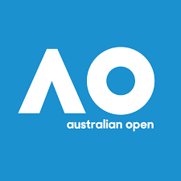

The 2020 Australian Open was a Grand Slam tennis tournament that took place at Melbourne Park, from 20 January to 2 February 2020. It was the 108th edition of the Australian Open, the 52nd in the Open Era, and the first Grand Slam of the year. The tournament consisted of events for professional players in singles, doubles and mixed doubles. Junior and wheelchair players competed in singles and doubles tournaments. As in previous years, the tournament's main sponsor was Kia.
Novak Djokovic and Naomi Osaka were the defending champions in Men's Singles and Women's Singles, respectively. Osaka lost in the third round to Coco Gauff. In contrast, Djokovic successfully defended his title by defeating Dominic Thiem to win the tournament for a record-extending eighth time.
This was the first edition of the Australian Open with GreenSet, a hard surface produced by GreenSet Worldwide.[1] GreenSet was the third type of hard surface used for the Australian Open.